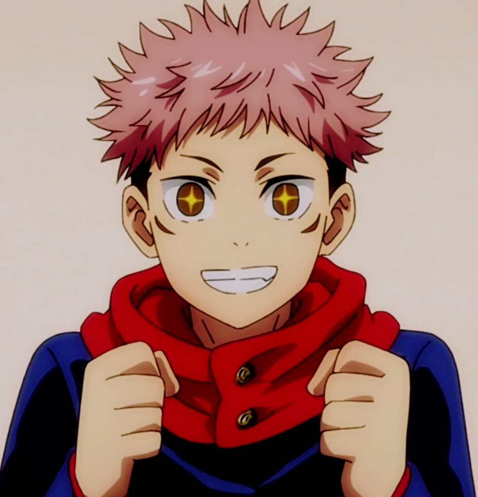
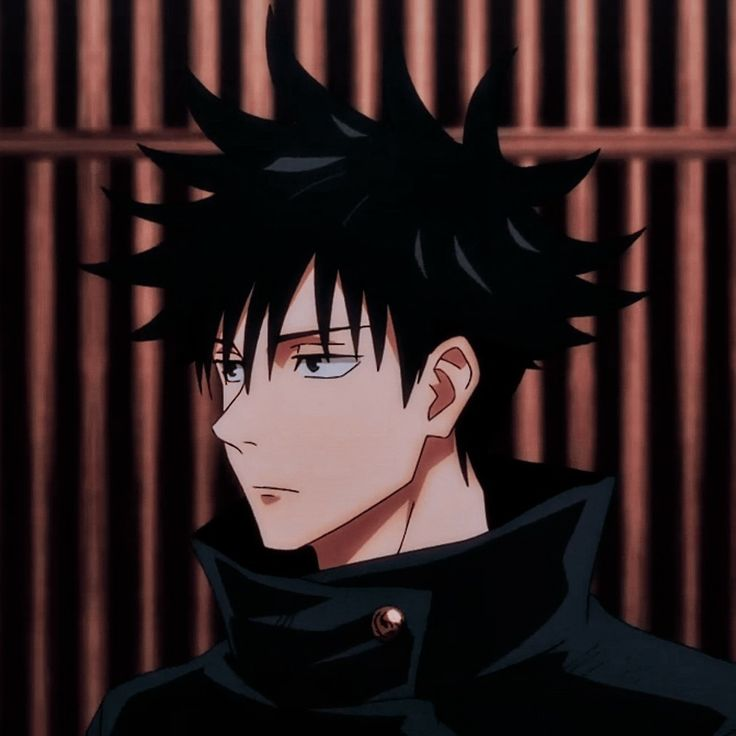
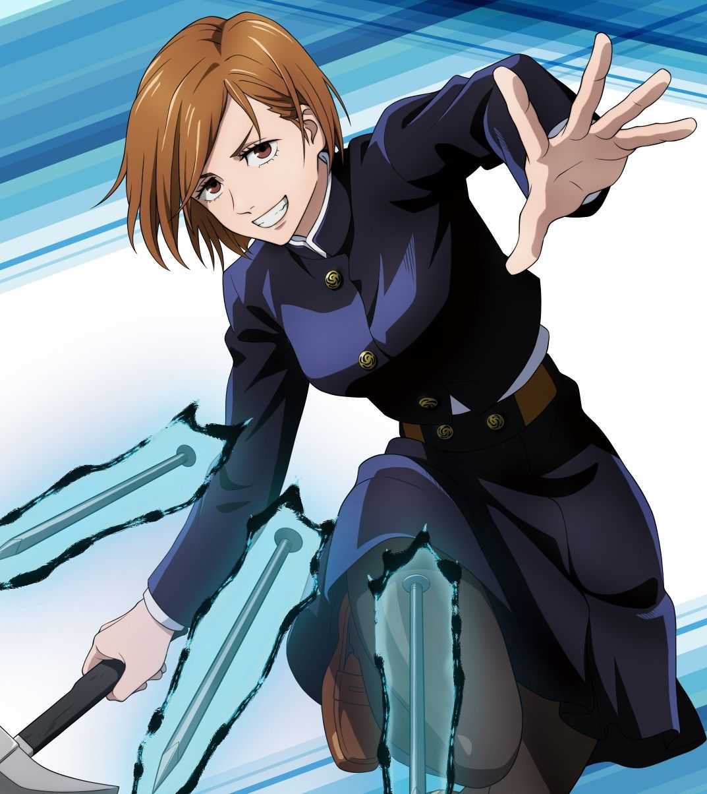
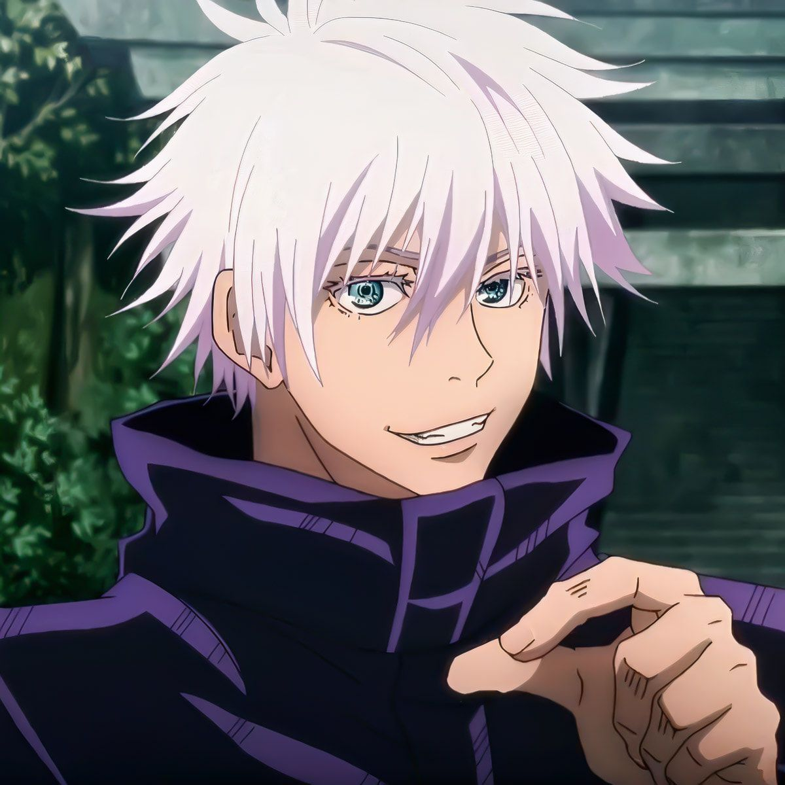
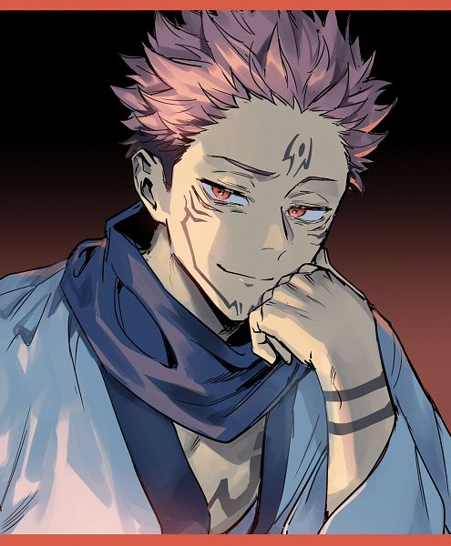

A história gira em torno de Yuji Itadori, um estudante do ensino médio que se envolve em um mundo de maldições e feitiçaria.
Quando um artefato amaldiçoado é aberto em sua escola, Yuji acaba ingerindo um dos dedos amaldiçoados do rei demônio Sukuna, o que o transforma em um hospedeiro para o espírito maligno.
Agora, ele precisa se unir a outros feiticeiros para combater as maldições e impedir que Sukuna ressuscite.
O anime também tem uma trilha sonora emocionante e cenas de ação impressionantes, Jujutsu Kaisen é uma série que prende a atenção do espectador do início ao fim.
Se você é fã de anime de ação e sobrenatural, definitivamente vale a pena conferir essa série.
O nome do anime "Jujutsu Kaisen" se refere a uma batalha entre feiticeiros que usam magia negra para combater maldições e espíritos malignos.
A palavra "juyjutsu" é escrita com um caractere diferente do usual para "jujutsu", que se refere à arte marcial japonesa.
Já "kaissen" pode ser traduzido como "batalha de volta", sugerindo que os personagens estão lutando para recuperar algo que foi perdido ou ameaçado pelas maldições.
呪術 (jyujutsu) - feitiçaria, magia negra
廻戦 (kaissen) - batalha, luta
Yuji é um adolescente musculoso com grandes olhos castanhos claros e cabelo preto e rosa espetado. Depois de comer o dedo e consequentemente se tornar um hospedeiro para Sukuna, ele recebe um segundo par de olhos que só se abrem quando Sukuna controla o corpo.
Uma das características definidoras de Yuji é sua disposição de se sacrificar pelos outros, desencadeada pelas últimas palavras de seu avô para morrer cercado por outros.
Yuji é famoso por suas habilidades físicas sobre-humanas, o que lhe valeu o apelido de "O Tigre do Colégio West Junior" antes de se tornar um Feiticeiro.
Suas habilidades são um tanto impressionantes, pos ele tem força sobre-humana, durabilidade aprimorada, velocidade e reflexos aprimorados, é um combatente corpo a corpo proficiente, resistente a venenos, e possui maestria com armas
é um jovem magro e relativamente alto de pele clara e olhos verdes (azul escuro na adaptação em anime). Ele possui cabelo preto com longos espinhos que sobressaem de todas as direções em volta da cabeça, lembrando um ouriço-do-mar (de acordo com Hakari).
Megumi é um indivíduo estóico, indiferente, e calculista. Ele geralmente tem uma expressão facial neutra que raramente muda, fazendo parecer que ele leva todas as situações a sério.
Essa versão diferente de Sasuke também se irrita fácil com as brincadeiras de seus companheiros, que são animados
Ele é bem habilidoso possuindo inúmeras técnicas diferentes, é um feiticeiro de 2ª série, possui força aprimorada, maestria com armas e grande intelecto tático
Nobara é de altura média com uma figura fina. Ela tem cabelo laranja de comprimento médio que chega ao pescoço que é estilizado com franja que cobre o lado direito da testa. Nobara tem olhos alaranjados, cílios longos e sobrancelhas finas da mesma cor.
é uma jovem confiante e impetuosa com um caráter inabalável. Mais do que tudo, Nobara está determinada a permanecer fiel a si mesma, não importa o que aconteça. Ela tem muito orgulho de ser uma garota bonita e uma lutadora forte, recusando-se a deixar que alguém a influencie.
Tem habilidades acima da média quando se trata de um feiticeiro jujutsu, possuindo habilidades como: Força aprimorada, maior tolerância à dor, maestria com armas e grande intelecto tático
Satoru Gojo é um homem alto, muito mais alto que seus alunos, e aparentemente é considerado atraente por muitas mulheres. Ele tem cabelo branco que geralmente é espetado para cima, mas Gojo o deixa solto quando está em um traje mais casual. Gojo tem olhos azuis brilhantes, mas eles normalmente estão cobertos por sua venda preta característica ou um par de óculos escuros.
é um indivíduo complexo, já que normalmente é indiferente e brincalhão com pessoas como seus alunos, colegas (próximos) e amigos, mas antipático e cruel com pessoas como Executivos Feiticeiros.
Ele priorizará a destruição de seus inimigos em vez de salvar pessoas inocentes quando pensa que o sacrifício é inevitável. No entanto, isso só se estende às pessoas mortas por seu oponente; Gojo não causará nenhum dano duradouro ou matará qualquer pessoa inocente para obter vantagem.
Satoru é considerado um dos, senão, o feiticeiro mais forte da série, contendo imensas quantidades de Energia Amaldiçoada e uma técnica perigosamente poderosa.
Suas habilidades são: força imensa, velocidade e reflexos sobre-humanos, inteligência tática
Sua aparência anterior é descrita como um demônio com quatro braços e duas faces. Atualmente, ele parece semelhante ao hospedeiro em que está, mas com cabelo espetado e com marcas exclusivas na testa, nariz, bochechas e torso. Ele também tem um segundo par de olhos sob os olhos normais, que geralmente estão fechados.
É egoísta, de coração frio, imoral e excepcionalmente sádico. Quando ele reencarnou logo após Yuji ter ingerido seu dedo, ele comentou, sugerindo o massacre de mulheres e crianças e comparando-as a vermes rastejando. Devido ao seu imenso poder, ele raramente se preocupa com as consequências de suas ações, mesmo que elas afetem seu hospedeiro.
Sukuna é um espírito amaldiçoado de grau especial. Como o espírito amaldiçoado mais poderoso de toda a série, Sukuna possui uma vasta quantidade de energia amaldiçoada . A presença de Sukuna foi sentida em Shibuya assim que ele foi acordado. Sua energia amaldiçoada é semelhante a Satoru Gojo em sua imensidão, mas diferente em sua natureza opressivamente maligna.
Suas habilidades são realmente muito altas possuindo: encarnação, mestre combatente corpo à corpo, força imensa, velocidade imensa, reflexos imensos, durabilidade imensa, grande intelécto tático e metamorfose.
